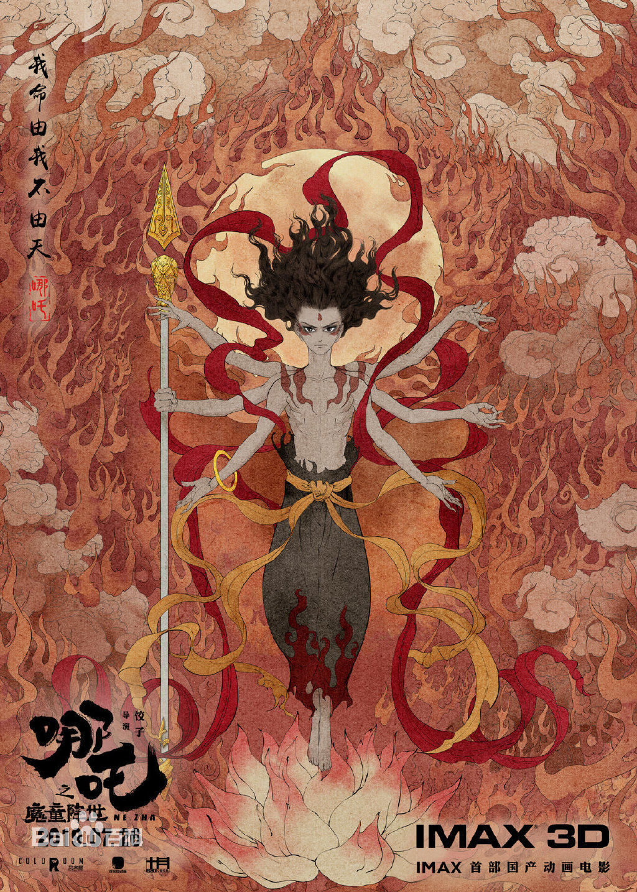
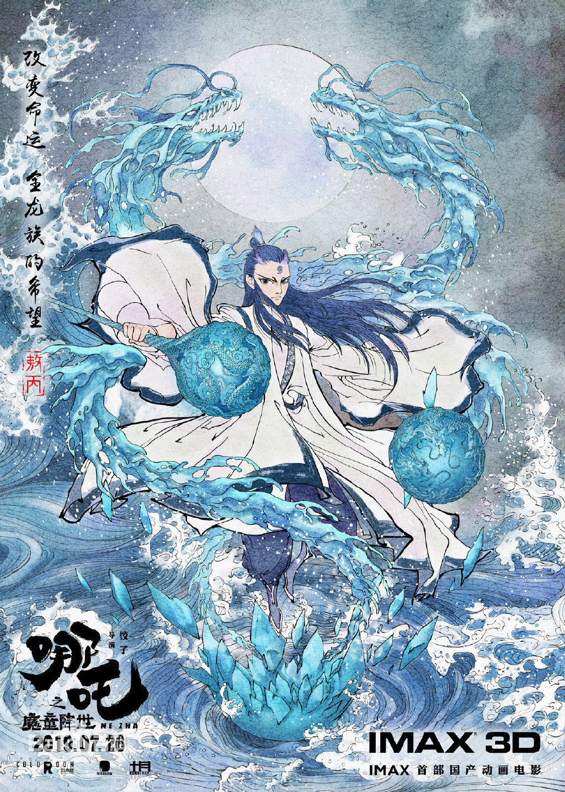
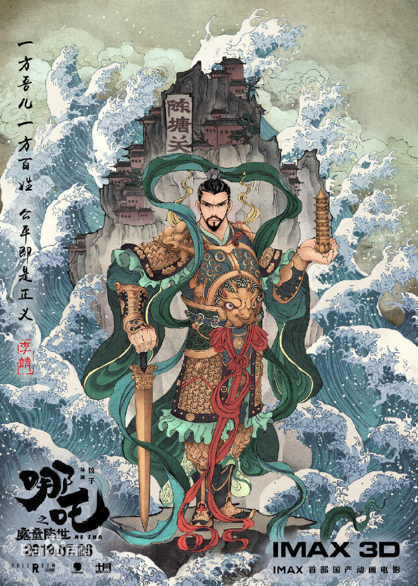
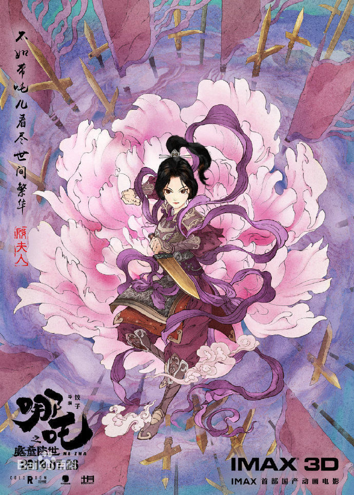
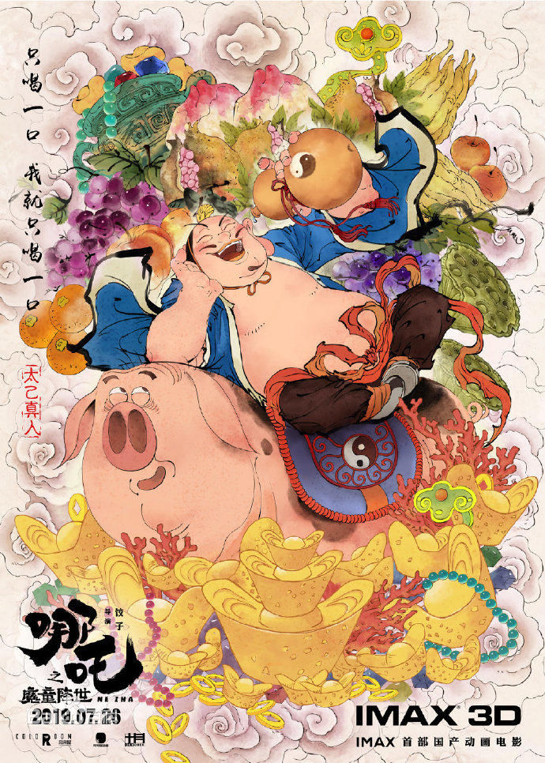
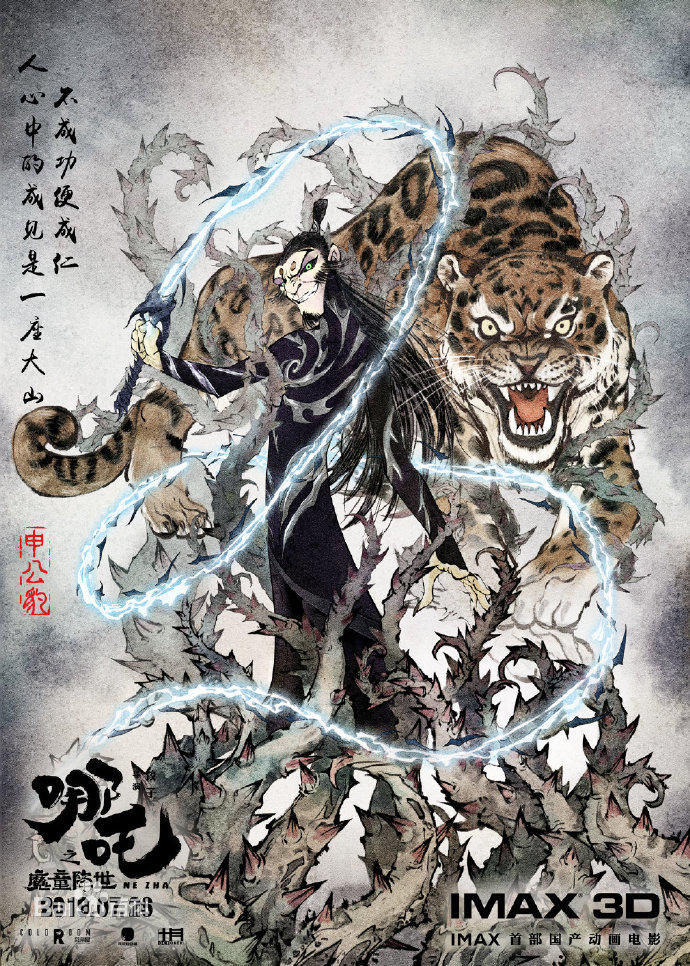

《哪吒之魔童降世》是由霍尔果斯彩条屋影业有限公司出品的动画电影，由饺子执导兼编剧，吕艳婷、囧森瑟夫、瀚墨、陈浩、绿绮、张珈铭、杨卫担任主要配音。该片改编自中国神话故事，讲述了哪吒虽“生而为魔”却“逆天而行斗到底”的成长经历的故事。该片于2019年7月26日在中国内地上映。
天地灵气孕育出一颗能量巨大的混元珠，元始天尊将混元珠提炼成灵珠和魔丸，灵珠投胎为人，助周伐纣时可堪大用；而魔丸则会诞出魔王，为祸人间。元始天尊启动了天劫咒语，3年后天雷将会降临，摧毁魔丸。太乙受命将灵珠托生于陈塘关李靖家的儿子哪吒身上。然而阴差阳错，灵珠和魔丸竟然被掉包。本应是灵珠英雄的哪吒却成了混世大魔王，这调皮捣蛋顽劣不堪的哪吒却徒有一颗做英雄的心。然而面对众人对哪吒的误解和即将来临的天雷的降临，哪吒是否命中注定会立地成魔，他将何去何从。
|  |
哪吒 哪吒是魔丸转世，李靖之子。因为魔丸转世的身份，他遭到了陈塘关百姓的歧视、排斥、嘲笑和敌对。也因此，他性格孤僻、冷漠、叛逆、憋屈、玩世不恭，时不时就要跑出门大闹陈塘关百姓，让大家也不得安生。玩世不恭的外表下，哪吒比谁都孤独，比谁都渴望认同。 |
|  |
敖丙 敖丙是灵珠转世，东海龙王三太子，申公豹的徒弟。身形飘逸，举止儒雅，一派翩翩美少年形象。他背负整个龙族翻身的期望，全族压力令他痛苦不堪而走上了邪路，做出了冰压陈塘关的举动。敖丙在哪吒的影响下，最终学会敢于做自己、不认命，并与哪吒联手抵抗命运，成为对方“唯一的朋友”。 |
|  |
李靖 李靖是哪吒的父亲，殷夫人的丈夫，陈塘关的镇关总兵，负责守护百姓抵挡妖魔鬼怪。不善言辞、沉默少言。他对哪吒不是排斥的、霸道的，而是主动寻求一种温和、平等的沟通，即便哪吒把陈塘关惹得鸡飞狗跳，他也不惜舍弃自己的情面，帮助哪吒得到世人认可。 |
|  |
殷夫人 哪吒的母亲，李靖的妻子，性格火爆，巾帼不让须眉，在哪吒成长道路上起了重要的引导作用。爱子如命，虽工作忙碌却尽力抽出时间陪伴哪吒成长，她和丈夫李靖对于哪吒均无私付出，但因不被哪吒谅解而遭到怨恨。 |
|  |
太乙真人 哪吒的师傅，乾元山金光洞的洞主，阐教大仙，元始天尊的弟子之一。说着一口“川普”，生性洒脱，为人诙谐幽默，不贪念权色却嗜酒如命。元始天尊命徒弟太乙真人将灵珠托生于李靖之子哪吒身上，然而阴差阳错下，灵珠和魔丸被掉包。太乙真人后收哪吒为徒，导其向善。 |
|  |
申公豹 元始天尊的弟子之一，阐教门人，太乙真人的师弟，敖丙的师傅，豹子修炼成精的妖魔。一个口齿不伶俐，内心很压抑的角色。他邪恶狡诈，备受天庭偏见而愤愤不平。为了争夺十二金仙的地位，逆天行事，更改了魔丸和灵珠的命运。 |
剧本、人物设计、场景设计等，导演饺子几近是全包全揽。因预算有限，从未学过表演的导演还担任了哪吒、敖丙、申公豹等主要人物的动作指导。
在动作设计上，饺子借鉴了李连杰主演的《黄飞鸿》系列电影——敖丙的打斗参考黄飞鸿，潇洒轻盈，自有一种大师风范；哪吒的动作则参考鬼脚七，狂野热血，穷追猛打。
太乙真人的道场乾元山金光洞就在四川江油，他说四川方言并非无凭无据。至于片中那对负责看守哪吒的活宝结界兽，形象则来自四川金沙遗址出土的殷商时期文物。
哪吒的双丸子头造型、敖丙的双锤武器来自1979年版《哪吒闹海》，哪吒得到混天绫和火尖枪后的那一段舞枪是完全再现；结界兽用兵器挑开结界的动作，借鉴的是1961年版《大闹天宫》；哪吒用变身术捉弄敖丙和申公豹，灵感来自成龙的代表作《双龙会》。
该片在前作的基础上大胆创新，既保留了中国传统文化的精髓，又加入了流行元素，让所要展现的文化更易于被受众接受。它打破成见，强调自我的独立性，更兼顾有隐喻的现实。片中有不少世俗丑恶的一面，比起真相，很多人更愿意去相信道听途说，然后带着有色眼镜去看人。反叛型超级英雄，虽看起来反叛传统却依然保留着最中正的热血和感动，依然有着奉献和担当的着中华文化的价值取向。（东南网评）
该片的逆袭，并不是打鸡血或者煲鸡汤。电影对哪吒的心路历程有着非常细腻且具有说服力的刻画。并且，编剧巧妙地将敖丙作为哪吒的对照，凸显了是人是魔都是自主选择，而不是天注定的主题。（荔枝娱评）
该片对经典的“哪吒闹海”进行了颠覆式改编，但影片以完成度极高、可观性极强的方式，讲好了一个熟悉又新鲜、热血又感人的“中国故事”。各个年龄层的观众爱看且买账，不单为那惊艳绝伦的中国风视效，更为角色命运与自身生命经验产生的共鸣而感动。（中国纪检监察报评）